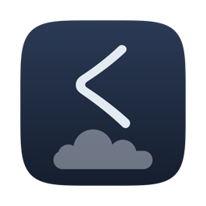
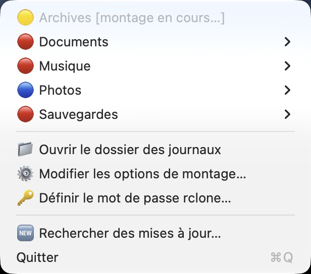

雲路 — « la route des nuages »
Un menulet pour monter vos remotes rclone. Prise en charge des configurations chiffrées, dont le mot de passe est gardé derrière TouchID. Nécessite rclone installé et une configuration rclone existante.
Télécharger Kumoji 1.3
macOS 13 ou plus récent · Apple silicon et Intel · 3,2 Mo
Interface en français et en anglais
Signée et notarisée par Apple
Chaque remote, son état d'un coup d'œil, et un clic pour le monter. Un sous-menu ouvre le volume dans le Finder ou le démonte.
Le mot de passe de votre configuration rclone reste en mémoire le temps que vous décidez. Montez dix volumes sans y repenser.
Aucun kext, aucune extension système, aucun redémarrage. Kumoji passe par le client NFS que macOS embarque déjà.

Un fichier rclone.conf chiffré demande son mot de passe à chaque
commande. Les enveloppes qui lancent rclone au clic redémarrent un processus neuf à
chaque fois : une authentification par montage, et la journée y passe.
Kumoji reste en mémoire et détient le secret elle-même. Une empreinte au premier montage, puis plus aucune jusqu'à l'expiration du délai — huit heures par défaut, réglable, y compris à « jamais » ou à « à chaque fois ». Une entrée du menu, Verrouiller maintenant, l'oublie immédiatement quand vous quittez votre poste.
Kumoji lit l'en-tête de votre rclone.conf pour savoir s'il est chiffré.
S'il ne l'est pas, elle ne demande rien : ni mot de passe, ni
empreinte — rclone n'en aurait que faire, et les deux entrées de menu qui les
concernent disparaissent.
S'il l'est et qu'aucun mot de passe n'est encore enregistré, elle le demande — et le vérifie contre votre configuration avant de le ranger dans le trousseau. Un mot de passe qui ne déchiffre rien n'y entre jamais. Et le jour où vous changez celui de votre configuration, Kumoji vous le dit au lieu d'échouer en silence.
Une bascule dans le menu, et Kumoji se pose dans la barre des menus dès l'ouverture de votre session. Elle ne monte rien pour autant : le nuage est là, vide, et vous montez ce dont vous avez besoin.
Presque tous les outils de ce genre reposent sur macFUSE : une extension système à autoriser au démarrage en mode restauration, réinstaller à chaque mise à jour majeure de macOS, et qui met le système à l'arrêt quand elle se plante.
Kumoji n'en a pas besoin. rclone sait exposer un remote par un serveur NFS local, et macOS sait monter du NFS depuis toujours. Aucun kext, aucune extension système, aucun redémarrage — le volume apparaît dans le Finder comme n'importe quel disque réseau.
Ouvrir le menu, voir ce qui est monté, démonter un volume : ces gestes ne demandent jamais d'empreinte. Kumoji garde en cache la liste de vos remotes — leurs noms et leurs chemins, jamais leurs jetons — et n'a donc pas besoin de déchiffrer quoi que ce soit pour dessiner son menu.
L'état affiché est celui que voit le noyau, pas une supposition. Et il est lu sans jamais interroger le serveur : un montage distant devenu injoignable fige la plupart des outils, ici il n'empêche pas le menu de s'ouvrir.
Un remote qui refuse de se monter ouvre une alerte portant les dernières lignes du journal de rclone — le motif exact, sans avoir à aller le chercher. Chaque remote tient son propre journal, ouvrable depuis le menu.
Les caches d'écriture ne sont effacés qu'après un démontage vérifié, une fois qu'aucun processus rclone ne subsiste : en cache complet, ils contiennent des modifications qui n'ont pas encore été envoyées.
Les options de montage vivent dans un fichier texte que le menu ouvre pour vous. Elles sont relues à chaque montage : pas de redémarrage pour essayer autre chose.
Deux jeux d'options : celles passées à tous les remotes, et celles réservées à ceux
dont vous savez qu'ils ne changent que par ce montage — leurs caches peuvent alors être
bien plus agressifs. Un remote se range dans cette catégorie par son nom, en le
suffixant -exclusive. Les remotes techniques, ceux qui n'existent que pour
en chiffrer un autre, se masquent du menu de la même façon.
Il est rangé dans le trousseau, protégé par TouchID, et marqué comme ne devant jamais rejoindre le trousseau iCloud ni suivre l'Assistant de migration. Sur un second Mac, vous le ressaisissez : c'est le prix de cette garantie.
Les processus rclone que Kumoji lance reçoivent un environnement construit pour eux — ils n'héritent pas des secrets de votre session. Rien ne part vers Kumoji, ni vers personne : l'application ne parle qu'à rclone et au noyau.
Ce que Kumoji ne fait pas. Elle ne remplace pas
rclone, qu'il faut avoir installé
(brew install rclone) et configuré : créer et paramétrer un remote
reste l'affaire de rclone config. Elle ne monte rien toute seule à
l'ouverture de session : elle s'y pose, prête, et le montage reste un geste
délibéré.
Les signalements se déposent sur GitHub. Deux formulaires guident : l'un pour ce qui ne fonctionne pas, l'autre pour ce qui manque. Quelques questions y sont posées — version, type de remote, journal du montage — parce qu'elles évitent presque toujours un aller-retour.
Signaler un problème Voir les signalements
Un compte GitHub est nécessaire pour écrire, mais pas pour lire.